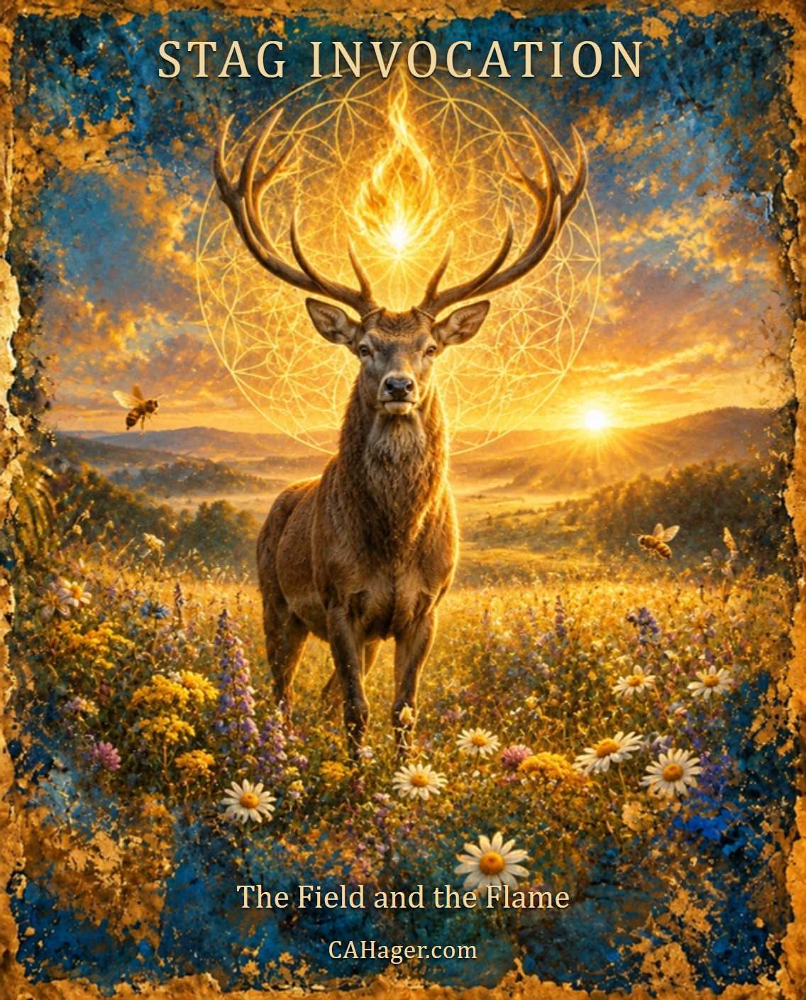

The Field and the Flame
Stag Invocation
Christopher Hager
I breathe, and I remember, I am the field of flowers, not the race car. Nothing to chase, nothing to prove. My only work is to bloom.
I am already enough, already chosen, already loved. When I am rooted in truth, the bees arrive, the blessings flow, and life pollinates itself through me.
I bless the ache. It is proof that love is alive and stretching me wider. I hold it, breathe it, and let it rise as creation, not comparison.
I honor the goddess. Her freedom does not diminish me; it reveals me. Her joy is my mirror, her pleasure my prayer.
I keep my fire sacred. The seed I hold becomes vision, art, laughter, and service. Through my body, love takes form in the world.
Today I vow to live as presence. To see God in every face, to laugh at the cosmic joke, and to walk as the stag, steady, playful, grounded, awake.
CAHager.com